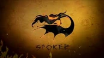
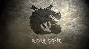
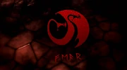
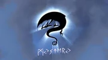
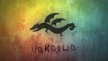

Dragones en general
Los Dragones son una especie de poderosos reptiles que pueden volar y escupir fuego (aunque hay dragones que no tienen alguna de estas habilidades como el Aguijón Veloz) y a diferencia de el resto de los animales, poseen una enorme inteligencia. La mayoría de las especies le tienen miedo a las anguilas, tienen un número limitado de disparos y poseen un punto ciego. Las especies son muy distintas entre sí, variando el color, habilidades, forma y tamaño, siendo algunas especies incluso hasta mitos, como el Rompehuesos.
Clase Fogonero
Los Dragones en la Clase Fogonero (Stoker Class en inglés) son conocidos por tener un fuego muy potente y poca paciencia. Muchos de los dragones en esta clase tienen la habilidad de prenderle fuego a su cuerpo, como el Pesadilla Monstruosa.
Clase Piedra
Los dragones en la Clase Piedra (Boulder Class en inglés) son robustos, pesados y resistentes, usualmente asociados con la tierra. Generalmente tienen la habilidad de comer piedras y, aunque sus alas suelen ser muy pequeñas comparadas al resto de sus cuerpos, pueden volar tan alto y rápido como la mayoría de los dragones.
Clase Espanto
En la Clase Espanto (Fear Class en inglés) son dragones escurridizos, delgados, y generalmente tienen más de una cabeza. Los únicos dragones que estuvieron temporalmente en esta clase son el Cremallerus Espantosus y el Tramphocico.En CEATD 2, esta clase parece ya no existir, tal vez por el hecho de que los vikingos ya no le tienen miedo a los dragones, sino que ahora viven en paz con ellos. El símbolo de la Clase Espanto esta representada por el Cremallerus Espantosus.
Clase Rastreadora
Los dragones en la Clase Rastreadora (Tracker Class en ingles) tienen un agudo sentido del olfato para rastrear y encontrar cosas. La Clase Rastreadora está representada por el Cremallerus Espantosus, a pesar de que no pertenece a esta clase. Para ver los dragones de esta clase vea: Categoría:Rastreadora.
Clase Afilada
Los dragones de la Clase Afilada (Sharp Class en inglés) son los más vanidosos y orgullosos de todos y pasan mucho tiempo pavoneandose. Estos dragones también son conocidos por tener espinas, aguijones o alas afiladas. La clase afilada esta representada por el Mortifero Nadder, a pesar de que ahora pertenece a la clase Rastreadora. Para ver los dragones de esta clase vea
Clase Marejada
Los dragones de la Clase Marejada (Tidal Class en inglés) viven en, o cerca de cuerpos de agua, principalmente el océano. Generalmente, no tienen fuego, sino que disparan algún otro elemento, como hielo o agua.
Clase Misterio
Los dragones de la Clase Misterio (Mystery Class en inglés) son dragones de los que se sabe muy poco y tienen un comportamiento misterioso, y algunos ni siquiera son dragones reales, sino que son solo mitos, o al menos, eso creen los vikingos.
Clase Embestida
Los dragones de la Clase Embestida (Strike Class en inglés) son rápidos, poderosos y muy inteligentes. Son los dragones más difíciles de entrenar, pero los más leales una vez entrenados.
Clase Desonocida
La Clase Desconocida (Unknown Class en inglés) es una clase inventada por fans para agrupar dragones cuya clase no se conoce todavía, pero que hay oportunidad de que sean agrupados en una más adelante. El dragón del cual nació esta clase no oficial fue el Gancho Terrestre, un dragón del videojuego de la primera película que no se encontraba agrupado en ninguna clase pero luego fue agrupado en la clase Piedra.